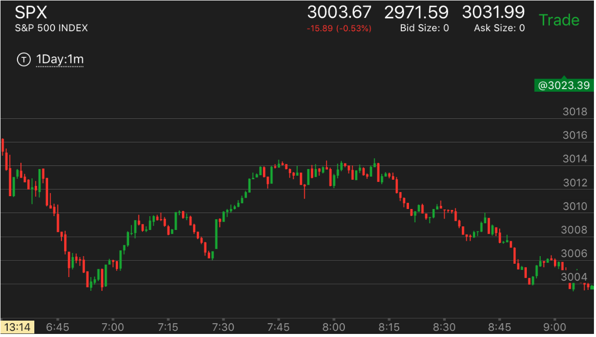
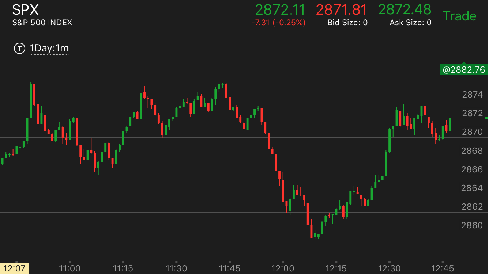
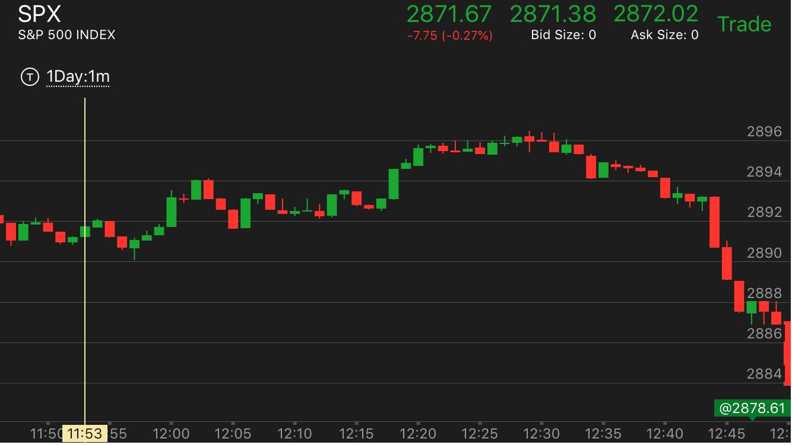
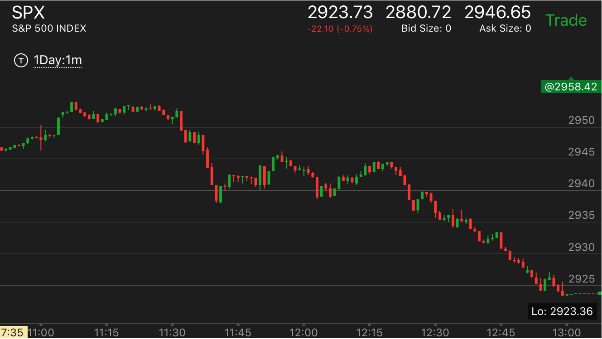

确定性的运动形状走势
- 正常的下跌是，下跌后，立刻反弹，再次下跌更深。或者开始下跌很慢。然后加快。如不是这样，那么就可能会反弹
一开始就下跌很快，然后缓慢走低，再次下跌，立刻反弹
开始下跌的时候，不断的反弹
开始下跌的时候，非常的缓慢，然后大幅快速下跌
开始下跌的时候，幅度比较大，然后填补真空后，大幅快速下跌。这样的走势一定会反弹
在底部或者顶部是否有反向加速走势
在底部或者顶部是否有反向加速走势
TOP
如果有反向加速，那么它会反弹到前面的走势以上，如果没有，会反弹当前走势以上，然后继续走低。
这个走势只能部分反转一个走势。

图示：7：00出现了反向加速走势，虽然它在底部没有停留，但是也算是加速了。
这样它一定会高于3014。但是会刚刚高于后，走低。因为它只是因为加速而反转，而不是真实的下跌。另外在6：58上涨的时候，
它在3006停留一下，说明了它不要形成加速走势。这样的上涨可以持续。而7：20它从高点下来的时候，很快穿过了3008和3010的震荡区，
这样说明它的下跌不可持续，这样形成了加速走势。果然它在7：28填补真空后，继续大涨。

图示：6：35走低后，反弹，再次走低。但是它没有加速走势，下跌速度不快，
说明它只是要填补真空，而不是要高于开盘点。果然，它冲高后，在7：30，它出现了顶部后，继续大跌。如果底部有加速，那么
就会超过开盘点。
开始下跌的时候，幅度比较大，然后填补真空后，大幅快速下跌。这样的走势一定会反弹
TOP

图示：11:40从最高点下跌，一开始就比较大，然后反弹后，大幅快速下跌。这样的走势是不可持续的。它的底部形状也是比较特别。没有双底。
而是跌破了双底后，才缓慢反弹的。
开始下跌的时候，非常的缓慢，然后大幅快速下跌
TOP

图示：12:30开始下跌。它开始非常的慢，下跌两个点，就反弹，再下跌一个点，再次走平，然后大幅快速下跌，一点反弹都没有了。
一开始就下跌很快，然后缓慢走低，再次下跌，立刻反弹
TOP

图示：12:00经过长时间的走平后，终于开始下跌。它一开始就很快。这个还算正常。但是他没有回调，就走平，然后再次下跌。
然后缓慢反弹。可以想到。这个反弹一定会超过开始下跌的点。12：45开始的下跌，从相对论的角度看，和12：00的下跌比较，它开始的幅度更高，下跌不到前面的转折的点
就开始走平了。这样说明未来会跌的更深。超过12：15 的低点。

图示:开盘出现了两段下跌。但是第二段一直没有结束，而是不断的反弹。这样就具备的下跌的动力。它果然大跌。
但是要看到它的大跌是从高点一下就跌了很多。而且没有反弹，就继续走低。这样的跌势无法持续。至少要上涨一下的。
开始下跌的时候，不断的反弹
TOP

图示:
1. 11:10到达最高点后，它先下跌。它的下跌速度低于前面的上涨速度。但是这个不能说明问题。
2. 11：14分下跌出现了小的两段走势。反弹。它的反弹很大，一下超过了两段点。然后一直走平。
3. 11：25下跌后，反弹，11：30下跌一点点，再次走平。
4. 11:40大跌后，创新低，然后立刻反弹，反弹的时候，出现了两段上涨走势。说明这个不是要涨的走势。这个只是在填补真空。这个不能认为它速度慢，就会超过前面。
关键在于是否填补了真空。如果离真空很远，那么这个就成了速度慢了。如果两段走势出现后，几乎填补了真空。那么就是填补了真空。
5. 12：20开始下跌的时候，非常缓慢，而且不断的反弹或者走平。这样就是持续下跌的走势。